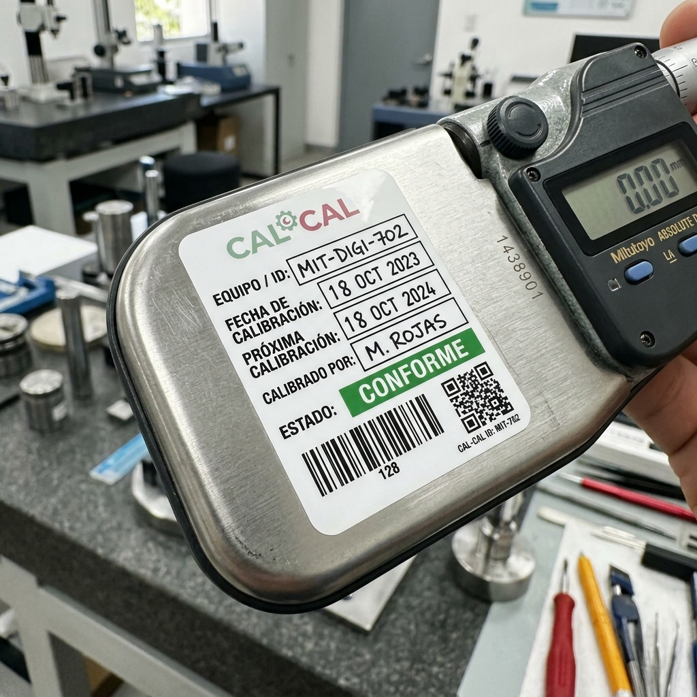

Comercialización de instrumentación técnica con certificado de calibración incluido, trazabilidad al SI y servicios acreditados para blindar sus auditorías.

Todos los instrumentos incluyen nuestro exclusivo Pack Calidad Total: Equipo + Certificado de Calibración Trazable listo para auditoría.
Sensor de alta precisión (-80 °C a 300 °C) para laboratorios y control térmico crítico en industria farmacéutica.
Monitoreo continuo en tiempo real (Bluetooth/Wi-Fi) para vacunas, medicamentos y transporte refrigerado.
Medición dual de humedad (10-95% HR) y temperatura para almacenes, bodegas de custodia y cuartos limpios.
Lectura de alta exactitud (0 a 700 bar) con registro de picos de presión para pruebas en tuberías e hidráulica.
Generador térmico portátil para verificación y calibración en campo de termopares y transmisores de temperatura.
Transferencia tecnológica completa: 26 SOPs norma ISO 17025, Calculador de Incertidumbre en Excel GUM y 8 hrs de capacitación.
Respaldo técnico de excelencia para empresas industriales, laboratorios clínicos y plantas de producción.
Calibración por comparación de RTDs, Pt100, termopares y termómetros de líquido en vidrio.
Implementación completa de Sistemas de Gestión, auditorías internas y validación de métodos.
Calificación de autoclaves, incubadoras, refrigeradores y sistemas de conservación crítica.
Diseñado para directores técnicos, jefes de control de calidad y auditores farmacéuticos. Modela presupuestos de calibración térmica en tiempo real, evalúa el diagrama de Pareto de varianza y calcula los grados efectivos de libertad bajo la Guía JCGM 100:2008 al 95% de confianza.
Modifica en tiempo real los sliders de repetibilidad (uA), resolución, deriva y estabilidad térmica, observando la actualización instantánea de la incertidumbre expandida (U = k · uc).
Identifica con precisión qué magnitud aporta el mayor porcentaje de varianza y determina el factor k exacto con la distribución t de Student cuando νeff < 60.
Incluye un módulo pedagógico para entrenamiento de metrólogos y un cuestionario interactivo de autoevaluación conforme a la Cláusula 6.2 de ISO/IEC 17025:2017.
Plataforma analítica v2.0 desarrollada en Python y certificada al 100% con 47 benchmarks del NIST (Norris) e ISO 5725-2. Integra 10 módulos especializados: Normalidad (Shapiro-Wilk), Outliers (Grubbs), Precisión Intermedia, ANOVA/Kruskal-Wallis, Mandel & WLS, EURAMET cg-20, Deriva (ISO 10012), Cartas de Control (ISO 7870), Error Normalizado En (ISO 17043) y Reglas de Decisión ILAC-G8 / Monte Carlo JCGM 101.
Verificación de Shapiro-Wilk, detección de atípicos mediante Grubbs exacto (ISO 5725-2) y cálculo de varianzas intra/inter-operador (sr, sL, sR) al 95% de confianza.
Modelado de deriva histórica de patrones (OIML D10 / ISO 10012), cartas de control X̄-R y CUSUM tabular (§7.7) y ensayos de aptitud con estadístico En y z-score.
Bandas de guarda determinísticas (w = r · U), propagación estocástica de Monte Carlo, Test de Mandel/WLS y caracterización térmica EURAMET cg-20.
Ingrese el número de certificado de CAL CAL (Ejemplo: CAL-2026-TERM-001) para verificar su trazabilidad y autenticidad.